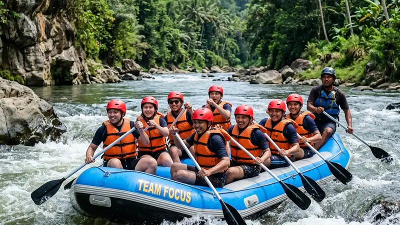

Paket outbound dan rafting perusahaan adalah program team building gabungan permainan darat dan arung jeram yang dirancang untuk melatih kerja sama, komunikasi, dan kepemimpinan karyawan di luar kantor.
- Paket outbound dan rafting perusahaan menggabungkan aktivitas darat dan aktivitas air dalam satu program terstruktur.
- Program ini umumnya dipesan oleh divisi HR atau event organizer internal untuk kebutuhan team building tahunan.
- Manfaat utamanya mencakup peningkatan komunikasi, kepercayaan tim, dan pemulihan energi kerja karyawan.
- Biaya dipengaruhi oleh jumlah peserta, durasi acara, lokasi sungai, dan kelengkapan fasilitas.
- Memilih operator berpengalaman dan bersertifikat keselamatan adalah faktor penentu keberhasilan acara.
Apa Itu Paket Outbound dan Rafting Perusahaan
Paket outbound dan rafting perusahaan adalah paket kegiatan luar ruang yang memadukan permainan team building di darat dengan aktivitas mengarungi sungai menggunakan perahu karet secara berkelompok.
Program ini berbeda dari wisata rafting biasa karena dirancang khusus dengan tujuan organisasi, bukan sekadar rekreasi. Setiap sesi permainan darat biasanya disusun untuk melatih aspek tertentu, seperti pemecahan masalah, komunikasi lintas divisi, atau pengambilan keputusan cepat. Sesi rafting kemudian menjadi puncak acara karena menuntut kerja sama fisik langsung antaranggota tim di atas satu perahu.
Paket ini umumnya ditujukan untuk perusahaan, instansi pemerintah, organisasi nirlaba, maupun institusi pendidikan yang ingin mengadakan kegiatan penyegaran tim sekaligus pelatihan soft skill. Peserta bisa berjumlah belasan hingga ratusan orang, tergantung kapasitas operator dan lokasi sungai yang dipilih.
Wilayah Batu dan Malang di Jawa Timur menjadi salah satu tujuan populer untuk paket ini karena memiliki beberapa jalur sungai dengan tingkat kesulitan bervariasi serta akses yang relatif dekat dari pusat kota. Faktor kedekatan lokasi ini membuat perusahaan dari Surabaya, Sidoarjo, dan kota sekitar Jawa Timur juga sering memilih Batu Malang sebagai destinasi kegiatan tahunan mereka.
Mengapa Perusahaan Membutuhkan Paket Outbound dan Rafting
Perusahaan membutuhkan paket outbound dan rafting untuk mengatasi masalah komunikasi tim, menurunkan kejenuhan kerja, dan membangun kepercayaan antarkaryawan melalui tantangan fisik bersama di luar lingkungan kantor.
Rutinitas kerja di kantor sering kali membatasi interaksi karyawan pada urusan formal saja. Kegiatan outbound memberi ruang bagi karyawan untuk berinteraksi tanpa sekat jabatan, sehingga hubungan kerja menjadi lebih cair dan komunikasi lebih terbuka.
Sektor MICE atau pertemuan, insentif, konvensi, dan pameran, termasuk kegiatan team building perusahaan di dalamnya, tercatat berperan penting dalam menggerakkan perekonomian daerah. Sepanjang tahun 2025, sebanyak 198 event besar mulai dari event nasional hingga event internasional dan MICE menghadirkan 12,20 juta pengunjung dan memicu perputaran ekonomi yang mencapai Rp23,76 triliun (Kemenpar, Desember 2025). Angka ini menunjukkan bahwa kegiatan berbasis pertemuan dan pelatihan kelompok, termasuk outbound korporat, memiliki kontribusi nyata terhadap ekonomi lokal di sekitar lokasi penyelenggaraan.
Selain manfaat ekonomi bagi daerah tujuan, kajian akademik juga mencatat bahwa industri MICE dinilai memiliki keuntungan tujuh kali lipat lebih besar dibandingkan dengan pariwisata rekreasi biasa menurut jurnal Kusuma berjudul MICE - Masa Depan Bisnis Pariwisata Indonesia. Kegiatan outbound dan rafting perusahaan yang terstruktur dengan baik dapat mendukung nilai tambah ini karena melibatkan konsumsi jasa akomodasi, konsumsi, dan transportasi di destinasi tujuan.
Bagaimana Cara Kerja Paket Outbound dan Rafting Perusahaan
Paket outbound dan rafting perusahaan umumnya berjalan melalui tahap briefing keselamatan, sesi permainan darat, aktivitas rafting di sungai, dan sesi evaluasi tim yang dipandu fasilitator berpengalaman.
Sebelum acara dimulai, operator biasanya melakukan koordinasi dengan pihak HR perusahaan untuk menentukan tujuan pelatihan, jumlah peserta, dan durasi acara. Berdasarkan tujuan tersebut, fasilitator menyusun rangkaian permainan darat yang relevan, misalnya simulasi menara balok untuk melatih perencanaan atau permainan estafet untuk melatih komunikasi cepat.
Pada hari pelaksanaan, peserta akan menerima pengarahan keselamatan sebelum turun ke sungai, termasuk cara menggunakan perahu karet, dayung, dan perlengkapan pelampung serta helm. Setelah pengarahan, peserta dibagi ke dalam kelompok kecil untuk mengarungi sungai bersama pemandu rafting yang berpengalaman.
Setelah sesi rafting selesai, banyak operator menutup acara dengan sesi refleksi atau evaluasi ringan, di mana fasilitator mengaitkan pengalaman di lapangan dengan situasi kerja sehari-hari di kantor.
Apa Saja Manfaat Paket Outbound dan Rafting bagi Tim Kerja
Manfaat utama paket outbound dan rafting bagi tim kerja meliputi peningkatan komunikasi, penguatan kepercayaan antaranggota, pelatihan kepemimpinan situasional, dan pemulihan energi kerja karyawan secara bersamaan.
Saat mendayung bersama menyusuri arus sungai, setiap anggota tim harus mengandalkan rekan satu perahu tanpa memandang jabatan struktural di kantor. Situasi ini secara alami melatih kepercayaan dan tanggung jawab bersama karena keselamatan satu perahu bergantung pada kekompakan gerakan seluruh anggotanya.
Manfaat ini biasanya juga dirasakan pada level individu. Karyawan yang berhasil melewati tantangan fisik bersama tim cenderung merasa lebih percaya diri saat menghadapi tekanan pekerjaan di kantor karena telah membuktikan kemampuan beradaptasi dalam situasi yang tidak biasa. Aktivitas di alam terbuka juga umumnya membantu menurunkan tingkat kejenuhan kerja sehingga karyawan kembali bekerja dengan energi dan fokus yang lebih baik.
Pembahasan lebih rinci mengenai manfaat ini, termasuk kaitannya dengan komunikasi lintas divisi dan retensi karyawan, dibahas secara khusus pada artikel manfaat outbound dan rafting perusahaan bagi tim kerja.
Apa Saja Jenis Aktivitas dalam Paket Outbound dan Rafting Perusahaan
Jenis aktivitas dalam paket outbound dan rafting perusahaan umumnya terbagi menjadi permainan darat berbasis kelompok kecil, aktivitas tantangan fisik ringan, dan sesi rafting di sungai sebagai aktivitas puncak acara.
Permainan darat biasanya mencakup simulasi pemecahan masalah, permainan kepercayaan seperti jatuh ke belakang yang ditangkap rekan tim, serta permainan strategi kelompok yang membutuhkan diskusi cepat. Sebagian operator juga menambahkan aktivitas tantangan fisik ringan seperti flying fox atau halang rintang sebagai pemanasan sebelum sesi rafting.
Sesi rafting sendiri biasanya dibagi berdasarkan tingkat kesulitan jalur sungai, mulai dari jalur ringan yang cocok untuk peserta pemula hingga jalur dengan jeram lebih menantang bagi perusahaan yang menginginkan pengalaman lebih intens. Pemilihan jalur ini sebaiknya disesuaikan dengan kondisi fisik rata-rata peserta agar acara tetap aman dan nyaman diikuti seluruh karyawan.
Bagaimana Cara Memilih Penyedia Paket Outbound dan Rafting Perusahaan
Cara memilih penyedia paket outbound dan rafting perusahaan yang tepat adalah dengan memeriksa legalitas usaha, sertifikasi keselamatan pemandu, ketersediaan asuransi peserta, dan portofolio pengalaman menangani acara korporat sebelumnya.
Legalitas usaha penting untuk memastikan operator memiliki izin resmi dari dinas pariwisata setempat. Sertifikasi keselamatan pemandu rafting menjadi indikator bahwa operator memahami standar prosedur darurat di sungai. Selain itu, perusahaan sebaiknya menanyakan apakah paket sudah mencakup asuransi kecelakaan bagi seluruh peserta selama kegiatan berlangsung.
Panduan lengkap mengenai kriteria pemilihan operator, termasuk pertanyaan yang perlu diajukan sebelum menandatangani kontrak, dibahas lebih detail pada artikel cara memilih penyedia paket outbound dan rafting perusahaan.
Berapa Biaya Paket Outbound dan Rafting Perusahaan
Biaya paket outbound dan rafting perusahaan bervariasi tergantung jumlah peserta, durasi acara, tingkat kesulitan jalur sungai, dan kelengkapan fasilitas tambahan seperti konsumsi dan dokumentasi.
Secara umum, semakin besar jumlah peserta, semakin rendah biaya per orang karena adanya efisiensi skala dari operator. Durasi acara satu hari penuh biasanya memiliki tarif berbeda dibanding acara setengah hari, terutama jika mencakup makan siang dan sesi permainan darat yang lebih panjang.
Rincian komponen biaya, kisaran anggaran umum, dan tips negosiasi dengan operator dibahas secara mendalam pada artikel biaya dan kesalahan umum dalam memesan paket outbound dan rafting perusahaan.
Apa Saja Kesalahan Umum saat Memesan Paket Outbound dan Rafting Perusahaan
Kesalahan umum saat memesan paket outbound dan rafting perusahaan meliputi tidak memeriksa kondisi cuaca dan debit air sungai, mengabaikan kondisi kesehatan peserta, serta memilih operator hanya berdasarkan harga termurah.
Cuaca dan debit air sungai sangat memengaruhi keamanan aktivitas rafting. Perusahaan yang tidak berkoordinasi dengan operator mengenai kondisi ini berisiko menghadapi pembatalan mendadak atau, lebih buruk, kondisi sungai yang tidak aman untuk peserta pemula. Kesalahan lain yang sering terjadi adalah tidak mendata kondisi kesehatan peserta terlebih dahulu, padahal aktivitas rafting membutuhkan kondisi fisik yang cukup stabil.
Pembahasan lengkap mengenai kesalahan umum ini beserta cara menghindarinya tersedia pada artikel cluster mengenai biaya dan kesalahan umum dalam memesan paket outbound dan rafting perusahaan.
Kapan Waktu Terbaik Mengadakan Outbound dan Rafting Perusahaan
Waktu terbaik mengadakan outbound dan rafting perusahaan umumnya adalah musim kemarau ketika debit air sungai lebih stabil dan risiko cuaca ekstrem lebih rendah dibanding musim hujan.
Pada musim hujan, debit air sungai dapat berubah drastis dalam waktu singkat sehingga sebagian operator memilih menunda atau membatalkan sesi rafting demi keselamatan peserta. Perusahaan yang merencanakan acara jauh hari sebaiknya berkoordinasi dengan operator mengenai perkiraan kondisi sungai pada tanggal yang direncanakan, serta menyiapkan rencana cadangan berupa permainan darat tambahan apabila sesi rafting harus ditunda.
FAQ
Apa itu paket outbound dan rafting perusahaan?
Paket outbound dan rafting perusahaan adalah program team building yang menggabungkan permainan kelompok di darat dengan aktivitas mengarungi sungai menggunakan perahu karet secara bersama-sama.
Apakah paket outbound dan rafting aman untuk karyawan yang belum pernah rafting?
Paket ini umumnya aman bagi pemula selama operator menyediakan pengarahan keselamatan yang jelas, perlengkapan standar, dan memilih jalur sungai dengan tingkat kesulitan ringan hingga sedang.
Berapa jumlah peserta minimal untuk memesan paket outbound dan rafting perusahaan?
Jumlah peserta minimal berbeda antar operator, namun banyak penyedia dapat melayani kelompok kecil belasan orang hingga ratusan peserta dalam satu acara.
Arya
penulis artikel yang sudah berpengalaman di dalam dunia wisata outbound Batu Malang.